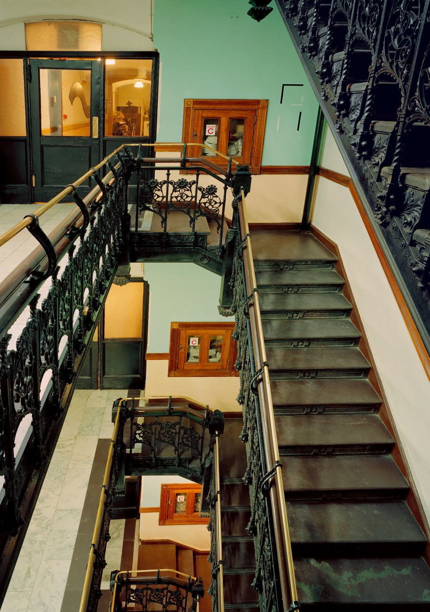

This storied Chelsea building has played host to a number of iconic artists throughout its more than 100-year history, including Patti Smith, Leonard Cohen, Mark Twain, Allen Ginsberg, and Dylan Thomas. But it's probably known more for its creepy stories: There's the murder of Nancy Spungen, allegedly by her boyfriend, Sex Pistols bassist Sid Vicious; there's also a ghost named Mary, a passenger on the ill-fated Titantic who survived, though her husband died in the tragic accident. Supposedly, she can be seen staring at her reflection in mirrors throughout the hotel.
"The ghosts of two lovers haunt the floors. Sweet, right?"
The Hotel Chelsea has a storied past, and has been a frequented by the likes of the many celebrities, including Patti Smith, Bob Dylan, Jimi Hendrix, and Andy Warhol. However, its legacy is just as ugly as it is star-studded. The Chelsea has been the site of several infamous celebrity deaths, specifically those of poet/writer Dylan Thomas and Sid Vicious' girlfriend Nancy Spungen. Spungen was found dead in a hotel room with Sid Vicious, and he was summarily arrested for her murder. He overdosed on heroin before he could stand trial, and it is said that the ghosts of the lovers haunt the floors.
_____________________________________________________